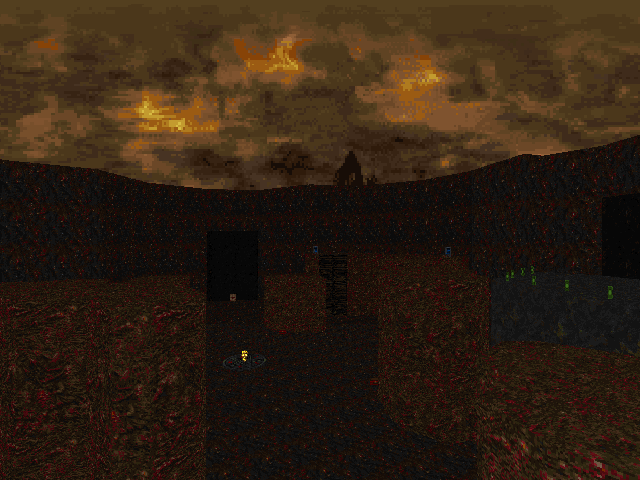

DOWNLOAD LINKS


| Year | 2025 |
| IWAD | Doom II |
| Source port | Boom/UMAPINFO-compatible |
| Game mode(s) | Single-player |
| Map(s) contributed | MAP09 |
PUSS XXVII: Perpetual Torment is a 14-map set of speedmaps in the ongoing Pineapple Under the Sea speedmapping series.
Co-led by BluePineapple72 and MemeMind, this entry had mappers make maps with resources from the Doom 4 Vanilla
gameplay mod, accompanied by a tailor-made texture set, and gameplay in the maps was to emulate that of the Doom "reboot" from
2016.
My own contribution to the wad occupies the MAP09 slot, and it has the title "Cesspool". I honestly don't have a lot to say
about it, it's more or less standard fare for a speedmap by Yours Truly. The first of the two arena fights in the map gives
you a key with which you can access the exit area, and the second one occurs right before the exit.